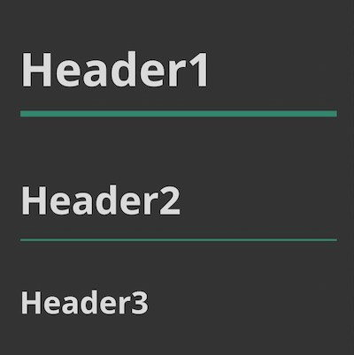

0. はじめに
いかなる現場においてもコーディングに関するルールが定められています。このルールを「コーディング規約」「ドキュメント」「README（リードミー）」などと呼びますが、プロジェクトにアサインされたメンバーが一人一人これらのルールに準拠しなければ、プロジェクト全体の保守性・可読性が失われてしまう恐れがあるため、非常に重要なものです。
担当講師から色々指摘をされ面倒だと感じることもあるかも知れませんが、ルールに準拠する練習だと思い頑張っていきましょう。
このページでは以下の事柄に関してまとめられています。
- 命名に際しての前提
- FLOCSSについて
- BEMについて
当然これらの内容は公式のドキュメントを参照することが一番確実ですし、調べれば先人方のありがたい文書がたくさん出てくるのですが、当ページではカリキュラム視点でまとめていきます。
内容にはある程度当ページの著者の恣意的な考えが含まれます。すべてを鵜呑みにするのではなく、公式ドキュメントないしご自身で調べた様々なサイトの意見を取り入れることが大事です。
また、当ページ自体に適用されているスタイルシートを参考にすることはお勧めしません。カリキュラム的に怒られるようなスタイルの当て方をしていますので。。。1
1. 前提
クラス名の命名に際して何点か前提となる規則があります。
1-1. キャメルケースで記述すること
名前が２単語以上となる場合は、２単語目の頭文字を大文字にして記述します。このような記述の方法をキャメルケースと呼びます2。
.l-sectionWrapper
.p-header__navList1-2. 名前に意味を持たせること
その要素がどのような要素なのか、どのような役割なのかある程度伝わるような命名を行う必要があります。
連番などは意味が伝わらないため不適です。
// OK : 写真のリストであることがわかる
.p-photoList
// NG : 連番は不適
.p-section__oneよくある間違い
-
名前に「container」「contents」を使ってしまう
コンテナもコンテンツもクラス名に使用することは不適です。コンテナが何を意味するのかレビュアーが判断できないからです。要素を包含するための要素であるなら、「wrapper」という命名の方が適しています。
また、言ってしまえばページ上に存在する全ては "コンテンツ" ですので、contentsという命名も不適です。そのコンテンツ自身がどんな要素なのかを表すような命名を行いましょう。 -
色や位置などを指定するような命名をしてしまう
クラス名に「red」「green」などの色を指定したり、「left」「right」などの位置を指定するような命名は不適です。後々にその色や位置が変更となった場合、cssの書き換えだけではなくhtmlごと書き換える必要が生じてしまう上、色などは受け手によって表現が変わってくる可能性があるためです。
1-3. すべてのクラス名にはプレフィックス（接頭辞）をつけること
すべてのクラス名には後述するFLOCSSに則り、「l-、c-、p-、u-」の4つのいずれかのプレフィックスがつきます。例外はありません。
2. FLOCSS
CSS設計に際する設計思想のこと。
プログラミング言語に限らず、何かしらを設計する際には必ず設計のルールが必要になります。そのルールを定義する際のもととなる概念、基本原則のことを設計思想といいます。
2-1. 概要
レイヤーを役割ごとに大きく3つ、そこから細かく5つに分類し構成されます。
FLOCSS
├ Foundation
├ Layout
└ Object
├ Component
├ Project
└ Utility
Foundation以外に分類されるレイヤーのクラス名の先頭に「l-、c-、p-、u-」といったプレフィックスをつけます。
公式ドキュメントはこちらです。
2-2. Foundation
ページ全体に関する下地的なスタイルを定義するレイヤーのこと。
公式では以下のように定められています。
（中略）
ブラウザのデフォルトスタイルの初期化や、プロジェクトにおける基本的なスタイルを定義します。
今カリキュラムにおいては、要素のタグに直接スタイルをあてることはこのFoundationをのぞいて禁止されています。よって、body, imgなどの要素そのものにスタイルを当てる場合にはFoundationであることを明示するとよいでしょう。
具体例
-
以下は一例です：
/* == Foundation.css == */というコメントアウトは入れても入れなくても良いですが、レビュアーにFoundationの記述だということが分かるような工夫は必要です。
また、これらのスタイルはCSSファイルの先頭に記述するべきです。3/* ======== Foundation.css ======== */
body {
font-size: 16px;
color: #333;
}
img {
width: 100%;
height: auto;
object-fit: cover;
}
2-3. Layout
ページを構成する枠組みを定義するレイヤーのこと。
公式では以下のように定められています。
ページを構成するヘッダーやメインのコンテンツエリア、サイドバーやフッターといったプロジェクト共通のコンテナーブロックのスタイルを定義します。
あまり使いません。ほとんどが後述するProjectで代用できます。
具体例
スティッキーヘッダーを実装する際に
.l-headerにposition: fixed;をあてる。全ページのmain要素に
.l-mainクラスを付与し、共通のスタイルをあてる。ページの横幅の上限を設定するために、div要素で包み
max-widthプロパティをあてる（当ページでもやってます）。
<header>, <main>, <aside>, <footer>要素など、全ページに共通する枠組みにあてるクラス名、というイメージでよいでしょう。
2-4. Component
全ページに共通して、繰り返し使用する要素に用いるレイヤーのこと。
公式では以下のように定められています。
再利用できるパターンとして、小さな単位のモジュールを定義します。
今カリキュラムにおいてはあまり出番はないでしょう。
複数のページにて繰り返し用いられる最小モジュールがComponentとなるのですが、カリキュラムでは単一のLPしか実装しないため、そもそも繰り返し用いる要素がないからです。
場所を問わず繰り返し用いられるレイヤーであるため、場所を特定するような命名は不適です。
例として、以下のような命名は避けましょう。
// NG : ヘッダーという場所を特定している
.c-headerLogo
// NG : mainでしか使用できないタイトル
.c-mainTitle具体例
-
見出しレベルでスタイルが変わるセクションのタイトル：
以下の例はbacklogの見出しのスタイルですが、このように見出しレベルによって同じスタイルを定義する際には、見出しそのものをComponentとして定義することができるでしょう。
 見出しコンポーネントの例 -
ボタンコンポーネントの一例：
以下は初級カリキュラムresponsive-site課題に登場するボタンですが、このようなモジュールは色々なページで使い回すことが可能であると見受けられるので、Componentとして実装することができるでしょう。
ボタンコンポーネントの例
よくある間違い
-
.c-logoや.c-photoのような命名を行ってしまうヘッダーのロゴに
.c-logoという命名や、写真を表示するimg要素に.c-photoという命名を行う例がよく見受けられますが、これらはComponentの観点では不適です。例えば企業のロゴ画像がページをまたいで各所に登場し特定のスタイルを当てる必要があったり、写真も同様に様々な場所で同様のスタイルが当たっているimg要素が複数回登場するのであればComponentと見なすことも可能（かもしれない）ですが、基本的には後述するようにBlockのElementとみなして命名すればよいため、このようなComponentはほとんどないでしょう。
-
marginをあててしまうComponentは様々な場所で使われることが想定されるため、どんな場所に配置してもその外部に影響を及ぼさない設計でなければなりません。つまり、
marginのようなプロパティをあてることは不適です。また、公式のドキュメントでは以下のように
との記述がありますが、今カリキュラムにおいてはこれら固有の幅や色などのプロパティは許容されます。出来る限り、最低限の機能を持ったものとして定義されるべきであり、それ自体が固有の幅や色などの特色を持つことは避けるのが望ましいです。
2-5. Project
Layout、Component以外のレイヤーのこと。
公式では以下のように定められています。
プロジェクト固有のパターンであり、いくつかのComponentと、それに該当しない要素によって構成されるものを定義します。
今カリキュラムにおいては、ほとんどProjectで実装します。
理由は、前述したようにほとんどComponentが登場しないからです。
具体例
-
Projectはプロジェクト固有のパターンを表すレイヤーであることから、Componentとは逆に場所を特定するような命名が適しています。
// aboutページのレイヤー
<article class="p-about">
// ヘッダーのスタイル
<header class="p-header">
// イントロダクションセクションのレイヤー
<section class="p-introduction">
よくある間違い
-
Projectを子要素を持たない単体の要素で実装してしまう
Projectは
いくつかのComponentと、それに該当しない要素によって構成されるもの
と定義されていることから、必ず子要素を持ちます。
よって以下のような実装は不適です<section>
<h1 class="p-sectionTitle">Title</h1>
<div>
...
</div>
</section>
2-6. Utility
あるレイヤーのスタイルを無理矢理変更する際に使用するスタイルのこと。
公式では以下のように定められています。
わずかなスタイルの調整のための便利クラスなどを定義します。
すでにスタイルが当たっている要素のスタイルを調整する際に使用します。こちらも今カリキュラムにおいてはあまり出番はないでしょう。4
具体例
-
同じようなスタイルのレイヤーの一部だけを変更したい
以下例では一度定義した
.p-section__titleというスタイルを再度使い回す際に、margin-topを追加した例です。<section class="p-section">
<h2 class="p-section__title">Title</h2>
...
</section>
...
<section class="p-section">
<h2 class="p-section__title u-marginTop--20">Title</h2>
...
</section> -
あらかじめ使用されると思われるUtilityスタイルを用意しておく
案件によっては便利スタイルとしてUtilityスタイルをあらかじめ様々な種類用意しておくこともあります。
// utility.css
.u-marginTop--5 {
margin-top: 5px;
}
.u-marginTop--10 {
margin-top: 10px;
}
.u-marginTop--15 {
margin-top: 15px;
}
.u-marginTop--20 {
margin-top: 20px;
}
.u-marginTop--25 {
margin-top: 25px;
}
...上記例では
margin-topだけ提示しましたが、margin-bottomやtext-alignなど様々存在します。
3. BEM
こちらもFLOCSS同様CSS設計に際する設計思想ですが、スタイルのプロパティの種類や要素の登場場所など関してではなく主にクラス名の命名に重きを置いたルールです。
3-1. 概要
以下の3つの分類で要素のクラス名を命名していきます。これらの頭文字をとってBEMと呼びます。
- Block
- 要素の大元となるくくり（Elementの親要素）
- Element
- Block要素を構成する要素の一部（Blockの子要素）
- Modifier
- 上記2つそれぞれの異なるバージョン
実際にはBEMから派生したMindBEMdingと呼ばれる命名方法に準じていますが、大きい違いはないため同じと考えて差し支えありません。本ページでは「BEM」と呼称します。
公式ドキュメントはこちらです（英語）。
3-2. 命名方法
BlockとElementをアンダースコア2つでつなぎます。
block__element要素の異なるバージョンをModifierを使って表す際は、ハイフン2つでつなぎます。
block__element--modifierFLOCSSに準じたプレフィックスをつけ以下のように命名します。
p-block__element--modifier具体例
-
具体的に命名した例：
大元となるセクションをBlockと定義し、そのBlockの構成要素であるタイトルをElementと定義して命名します。
また、セクション内に画像のリストがあると仮定すると、以下のような命名となります。<section class="p-section">
<h1 class="p-section__title">Title</h1>
<ul class="p-section__imgList">
<li>...</li>
<li>...</li>
<li>...</li>
</ul>
</section>
3-3. Block
公式では以下のように定義されています。
.block represents the higher level of an abstraction or component.
より要素として上位、また抽象度も上位であると定義されています。大元の要素、という捉え方で問題ないでしょう。
また、そのBlock要素の大きさに制限はありません。
小さなコンポーネント要素をBlockと実装するケースも多いです。
注意するべき点として後述のElementセクションでも説明しますが、Blockが定義されていない状態でその要素のElementを定義することは不適です。
よくある間違い
-
別プレフィックスを同じBlockとして扱ってしまう
以下の例では、
.l-headerというブロックを定義しその配下に.p-header__logoという要素を配置していますが、これは誤った命名です。.l-headerと.p-headerはBlock自体は同じ名前ですが、プレフィックスが異なる場合は別Blockとみなします。
つまりこの場合.p-headerというBlockが定義されていないにも関わらず、その養成要素である.p-header__logoという要素を定義してしまっていることになっているため、実装としては不適です。
header要素を<header class="l-header">
<img class="p-header__logo" src="./hoge.jpg">
...
</header>.p-headerと命名するか、.l-header__logoとLayoutの子要素とみなしましょう。
3-4. Element
公式では以下のように定義されています。
.block__element represents a descendent of .block that helps form .block as a whole.
Block全体の形成に役立つBlockの子孫、とのことでBlockの子要素でありBlockを形成するための要素であることがわかります。
ただし、Blockの構成要素はすべてそのBlockのElementとしなければならないわけではなく、Blockの子要素に新たなBlockが配置されていても全く問題ありません（むしろそうでないと実装がとても困難になります）。
具体例
-
Blockの子要素にBlockがある例：
<section class="p-section">
<h2 class="p-section__title">Title</h2>
<p class="p-section__caption">Caption</p>
<div class="p-about">
<ul class="p-about__list">
<li>...</li>
<li>...</li>
<li>...</li>
</ul>
</div>
</section>.p-sectionBlock内に.p-aboutBlockが配置されています。あくまで一例であり別Blockとみなすか.p-sectionのElementとみなすかは実装者の裁量によって決定されます。形成するために必要な要素だと考えればElement扱いとして.p-section__aboutなどと命名するとよいでしょう。SCSSを用いる場合はBlockごとにファイルを分割することが多いため（今カリキュラムでもこの方式です）、なるべく同Blockとみなした方がファイル管理はしやすいでしょう。
-
ネストが深くなった例：
Blockの要素ないでネストが深くなった場合でも、あくまでBlockの構成要素であればそのBlockのElementです。
以下はネストが深いBlock要素のElementの命名の例です。<section class="p-section">
<div class="p-section__structure">
<div class="p-section__inner">
<div class="p-section__contextBox">
<ul class="p-section__list">
<li class="p-section__listItem">
<a class="p-section__link" href="dummy">
...極端な例ではありますが、要素が固有のプロジェクトである
.p-sectionの構成要素である限りそのElementとして扱います。 -
LayoutのElementは枠組みの役割ではない：
FLOCSSの定義上Layoutは枠組みの役割を担いますが、その子要素であるElementはプレフィックスは
l-ですが枠組みの役割はありません。
よって以下のようにheader要素にl-headerという命名をした場合、その子要素であるimg要素にl-header__logoという命名をしても問題ありません。5<header class="l-header">
<img class="l-header__logo" src="./hoge.jpg">
...
</section>
よくある間違い
-
Blockを定義せずにそのElemetを定義してしまう
ElementはBlockを形成する子要素であることから、必ず親であるBlockの定義が先に必要です。以下はBlockが定義されていないにも関わらずElementを実装してしまっており誤りです。
<footer class="l-footer">
<img class="p-footer__logo" src="./hoge.png">
<ul>
<li class="p-footerList__link">...</li>
<li class="p-footerList__link">...</li>
<li class="p-footerList__link">...</li>
</ul>
</section> -
異なるBlockに異なるBlockのElementを配置してしまう
Elementはその親Blockの内部にしか配置することはできません。SCSSのファイル管理が複雑になってしまうデメリットもありますので、以下のような例は不適です。
<section class="p-about">
<h2 class="p-about__title">About Title</h2>
...
</section>
...
<section class="p-introduction">
<h2 class="p-about__title">Introduction Title</h2>
...
</section>
3-5. Modifier
公式では以下のように定義されています。
.block--modifier represents a different state or version of .block.
BlockやElementの異なる状態やバージョンを表しているとのことで、とある要素の若干異なるスタイルを当てる際にModifierで命名します。
具体例
-
すでに定義されている要素の状態違いを表す命名：
以下は状態違いのComponentをModifierで命名した例です。
.c-btn {
background-color: inherit;
border: solid 1px black;
...
}
.c-btn--disable {
background-color: gray;
border: solid 1px gray;
... // 以下.c-btnと同じスタイル
}すでに定義されているボタンコンポーネントの状態違いのスタイルをModifierを用いて命名し実装しています。特定のスタイルのみ変更するような使い方をすることが一般的であり、SCSSでコーディングする場合は
@extend構文などを用いると効果的です。
よくある間違い
-
クラス名に色や位置を含めてしまう
Modifierといえどクラス名に色や位置を指定する命名を行ってしまうことは、前述の通り不適です。色で指定するのではなく、その状態を表す命名にしましょう。
上記の例のように、使用不能を表すなら「disable」、強調を表すなら「strong」「emphasize」などのような命名を行いましょう。
4. さいごに
これまで示した具体例はすべてあくまでも一例です。実装者・レビュアーの裁量によって命名は変化しますし、良し悪しの判断も変わってきます。なのでレビュアーや他実装者に質問や意見を受けた際に、自分の言葉で実装内容（命名理由など）を説明できるように実装することがとても重要です。カリキュラム講師も実装理由ありきで内容を評価しています。
また、これまでの内容は今カリキュラムに沿った実装・命名方法をまとめています。案件によって全く変わってきますので、実際の現場に入った際にはメイン実装者の意向やドキュメントを十分に参照し、臨機応変に対応していきましょう。6